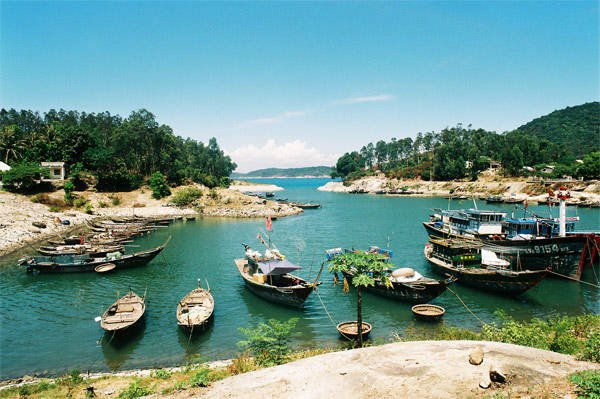

Vẻ đep kỳ thú của thiên nhiên
Thiên nhiên luôn chứa đựng những điều kỳ bí đem đến sức hút lạ thường khiến con người luôn muốn đặt chân đến khám phá những điều diệu kỳ ẩn sâu bên trong. Nhắc đến vẻ đẹp thiên nhiên, chẳng cần đi đâu xa, ngay trên mảnh đất hình chữ S thân thương nơi được mệnh danh là “rừng vàng biển bạc” với của non sông hùng vĩ cũng đã đem đến vô vàn điều thú vị. Đừng bỏ lỡ cơ hội ngắm nhìn những hình ảnh đẹp của thiên nhiên Việt Nam, chinh phục những vùng đất mới, thả hồn phiêu du theo những miền ký ức, cảm nhận vẻ đẹp tinh khiết nhất của đất trời để rồi chúng ta lại thêm yêu và tự hào về Việt Nam tươi đẹp.
Cô Tô – đảo nhỏ giữa xanh ngắt đại dương
Cô Tô mê hoặc du khách bởi những bãi biển hoang sơ với bờ cát trắng và làn nước trong xanh. Nhiều người lại ấn tượng với bữa tiệc nướng bên biển, hay lênh đênh trên con thuyền câu mực vào ban đêm, trèo lên ngọn hải đăng ngắm nhìn bốn bề trời mây sông nước hoặc ngủ ngon lành trong những căn lều du lịch để cảm nhận được cát lạo xạo dưới lưng.
Cù Lao Chàm – viên ngọc xanh
Nhiều người ví Cù Lao Chàm như một viên đá chưa được gọt giũa, các cạnh của nó vẫn nguyên vẻ xù xì, ngăn trở bằng những bãi đá nhấp nhô như răng khểnh. Với 8 hòn đảo nhỏ trải dài theo hình cánh cung xanh mướt, Cù Lao Chàm là một trong nhiều quần đảo hoang sơ mới được đưa vào khai thác trong vài năm gần đây ở Quảng Nam.
Mộc Châu – thảo nguyên hoa
Người ta đến với Mộc Châu để được lang thang trên những đồi chè, ngắm bầu trời xanh trong lồng lộng từ trên cao, nhón chân bước qua những phiến đá rêu phong của thác Dải Yếm, tò mò với Hang Dơi, hay đơn giản chỉ là nhấm nháp chút hương vị mát lạnh mỗi sớm sương chưa tan vẫn giăng mắc khắp các hang cùng ngõ hẻm của mảnh đất này.

Ngoài ra hãy cũng ngắm nhìn một số hình ảnh về vẻ đẹp của các nơi khác trên thế giới nhé!